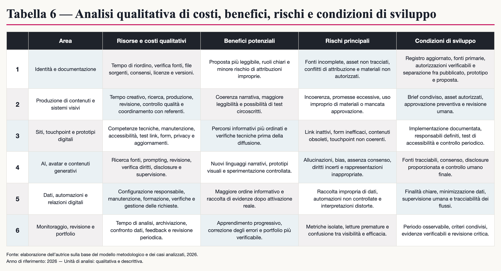

ESTETOLOGIA E AVATAR AI
Arte, identità e strategie di marketing

Coerenza visiva
Il framework organizza touchpoint digitali ed estetologia all'interno di un unico ecosistema metodologico integrato.
“Arte, visual design, marketing, AI e touchpoint in un ecosistema progettuale da validare progressivamente.”


Attribuzione dei Touchpoint
I loghi, il sito, la piattaforma e-commerce e la blockchain Mèlia sono infrastrutture preesistenti o di terze parti. Il contributo del Project Work è limitato alla proposta narrativa e visiva de "Il Tempo delle Api".
Elementi della Proposta
La proposta strategica organizza una sinergia editoriale tra copertine e canali digitali. I touchpoint, come la newsletter o le automazioni, sono da intendersi come scenari propositivi e non come strumenti attivi.


“Prototipo proprietario sperimentale. Non quinto caso cliente.”



Estetologia come criterio progettuale